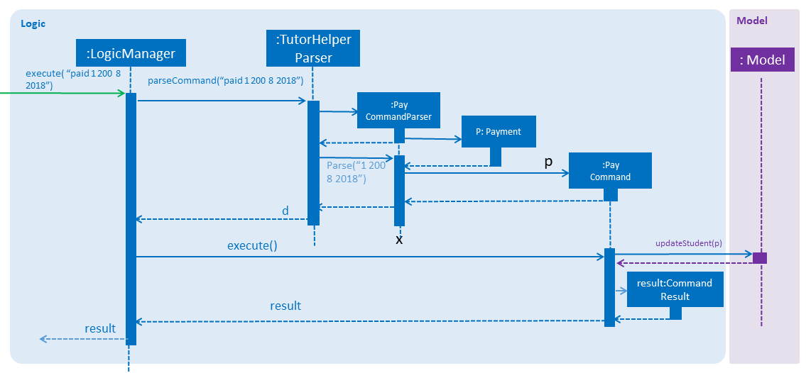

1. Value Proposition
Current:
-
Tutors use reminder applications to keep track of lessons -
Tutors use physical diaries or notepads to keep track of current lesson progress
Value:
-
Tutors have a platform where they can keep track of all their students' details, their progress and the syllabus they intend to cover.
2. User Stories
-
As a busy tutor, I want to be able to manage my students' schedules individually, so that I can plan my time properly.
-
As a tutor, I want to be able to find out where my students live and what time I should be there for tuition.
-
As a tutor, I want to know my students' individual progress so that I know what topics I need to cover for the next tuition session.
-
As a tutor, I want to keep track of my students' payments.
3. Use Cases
-
Add Student
System: TutorHelper Actor: Tutor MSS: 1. Tutor inputs to add a student and his/her details. 2. System adds student details into the database. Use case ends. Extensions: 2a. Tutor did not key in all mandatory fields. 2a1. System displays error message informing tutor of invalid index. 2b1. Resume step 1. -
Edit Student
System: TutorHelper Actor: Tutor MSS: 1. Tutor inputs to edit a student's details. 2. System edits student details into the database. Use case ends. Extensions: 2a. Index is out of bounds 2a1. System displays error message informing tutor of invalid index. 2b1. Resume step 1. -
Delete Student
System: TutorHelper Actor: Tutor MSS: 1. Tutor inputs student's index to delete. 2. System deletes student details from the database. Use case ends. Extensions: 2a. Index is out of bounds 2a1. System displays error message informing tutor of invalid index. 2b1. Resume step 1.
-
List Students
System: TutorHelper Actor: Tutor MSS: 1. Tutor requests to list students. 2. System displays current list of students. Use case ends.
-
Group Students
System: TutorHelper Actor: Tutor Precondition: Current list of students is not empty. MSS: 1. Tutor requests to group students by day or timing. 2. System filters the current list of students based on the timing entered. 3. System sorts the filtered list of students in order of timing. 4. System displays filtered and sorted list to Tutor. Use case ends. Extensions: 2a. Input is invalid 2a1. System displays examples of valid input to Tutor. Use case ends. -
Record students' payments
System: TutorHelper Actor: Tutor Precondition: student index entered must be valid. MSS: 1. Tutor request to add in payment for a student. 2. System searches for that student according to index entered. 3. System adds Payment amount, month and year to student's record. 4. System displays payment record in browser panel. 5. System displays successful recording of payment under command box. Use case ends. Extensions: 2a. Tutor does not enter all the required entries correctly 2a1. System displays error message 2a2. System gives tutor an example of a correct entry. 2a3. Repeat step 1 2b. Tutor does not enter a valid student index 2b1. System displays error message telling tutor that index is invalid 2b2. Repeat step 1. -
Edit students' payments
System: TutorHelper Actor: Tutor Precondition: student index entered must be valid MSS: 1. Tutor request to add in edited payment for a student. 2. System finds the existing payment entry with same month and year. 3. System adds new payment entry to existing entry. 4. System displays payment record in browser panel. 5. System displays successful recording of payment under command box. Use case ends. Extensions: 2a. Tutor does not enter all the required entries correctly 2a1. System displays error message 2a2. System gives tutor an example of a correct entry. 2a3. Repeat step 1 2b. Tutor does not enter a valid student index 2b1. System displays error message telling tutor that index is invalid 2b2. Repeat step 1. -
Display tutor’s earnings for that month and year
System: TutorHelper Actor: Tutor Precondition: Tutor has recorded payment from students before. MSS: 1. Tutor request for earnings for a specific month and year. 2. System searches for all the payment records made from all the students for that particular month and year. 3. System adds up all the payment. 4. System displays total earnings under the command box. Use case end. Extensions: 2a. System does not find any payment recorded for that month and year. 2a1. System displays $0 as result. -
Edit students' syllabus for that subject
System: TutorHelper Actor: Tutor Precondition: Tutor has an existing syllabus entry at the index. MSS: 1. Tutor request to edit syllabus for a specific student, subject and syllabus 2. System searches for the student and the respective subject and syllabus at specified index. 3. System edits the syllabus at the specified index with new syllabus 4. System displays edited syllabus list in browser panel 5. System displays successful editing of syllabus under command box. Use case end. Extensions: 2a. System does not find any student entry at specified index. 2a1. System displays error message telling tutor that index is invalid 2a2. Repeat step 1. 2b. System does not find any subject entry at specified index. 2b1. System displays error message telling tutor that index is invalid 2b2. Repeat step 1. 2c. System does not find any syllabus entry at specified index. 2c1. System displays error message telling tutor that index is invalid. 2c2. Repeat step 1. 2d. System find same syllabus entry already exists in subject. 2d1. System displays error message telling tutor that syllabus already exist. 2d2. Repeat step 1.
4. Non-Functional Requirements
-
The system should respond in two seconds.
-
The system should be understandable to a novice in working with computers.
5. Implementation
This section describes some noteworthy details on how certain features are implemented.
5.1. Group Students feature
5.1.1. Current Implementation
Classes related to Group and its functionality is listed below:
-
TutorHelperParser— Creates a GroupCommandParser object and parses the user’s input. -
GroupCommandParser— Analyses the input, creates a predicate based on the input and returns a GroupCommand object with the predicate as the argument. -
GroupCommand— Filters the list based on the predicate and displays it to the user.
Given below is an example usage scenario and how the group mechanism behaves at each step.
Step 1. The user launches the application for the first time.
Step 2. Assuming that the application isn’t empty, the user executes 'group Monday' command to group all students with a class on Monday. The group command will be called by GroupCommandParser.parse(), parsing the argument to check against. The application will check the list and display all students with classes on Monday, sorted based on the earliest timing.
The user can execute list to re-display the full list of students again.
|
The user can execute undo to undo the sorting done to the list.
|
The group command is CASE-SENSITIVE. E.g. Passing MONDAY as an input instead of Monday will throw an error.
|
| Only 12-hr timings are valid. |
The following sequence diagram shows how the group operation works:

5.2. Students payment feature
5.2.1. Current implementation
The Payment mechanism is facilitated by VersionedTutorHelper and FilteredList<Person>. VersionedTutorHelper extends from TutorHelper and classes related to Payment calls methods from VersionedTutorHelper to retrieve students' data, update them and display accordingly.
Classes that are related to Payment and their functionality are as listed below:
* TutorHelperParser — Creates a PayCommandParser object and calls parse method in object to parse user’s argument input.
* PayCommandParser — Analyses the input, checks for any violation of syntax and returns a PayCommand object with the Payment object as the argument.
* PayCommand — Calls on methods in VersionedTutorHelper to update new Payments made.
* Payment — -Contains fields to store student id, amount paid, month of payment and year of payment.
Given below is an example usage scenario and how the payment mechanism behaves at each step. Step 1. The tutor launches the application and wants to record a payment for his/her student called Alice.
Step 2. He/she makes a mental note of Alice’s student index as listed in the left side of the application.
Step 2a. Lets say, Alice has student id 2. The payment she made was $400 for the month and year of November 2018. He/she proceeds to key in command in the following format: paid 2 400 11 2018
Step 2b. The tutor’s input is passed from the text box through LogicManager class to TutorHelperParser. TutorHelperParser sieves out the arguments and command word(in this case, paid) and creates the PayCommandParser object, followed by calling parse method, with the arguments passed in.
Step 2c. PayCommandParser then checks if the inputs are of the correct format and it initialises a Payment object with the inputs.
Step 2d. The PayCommandParser method then returns a PayCommand object with payment object.
Step 2e. This is propagated back to the LogicManager class which then proceed to call execute method in the returned PayCommand object.
Step 2f. The execute method in PayCommand proceed to obtain the list of students from the model. Since 2 is a valid student index, it proceeds to retrieve information from Alice Person class.
Step 2g. Alice person class contains payment class. The PayCommand execute method proceeds to call the method updatePayments, then calls updatePerson in model class to modify Alice Person class with the new updated payment.
Step 3. Now, payment details have been updated and the tutor will be able to see a payment updated successfully message below the command text box and the list of payments as well as other details about Alice
Step 4. XmlAdaptedPay is responsible for converting the data type to the appropriate data type for display through the toModelType method.
Step 5. The tutor may also choose to view the details from browser panel by clicking on Alice tab on the left. Payments will be displayed in one of the rows.
| Payment list will keep up to 10 payments at any one time. When the 11th payment is added, the payment list will remove the oldest payment record. |
The diagram below illustrates the sequence diagram.

5.3. Students edit payment feature
5.3.1. Current implementation
Classes that are related to Payment and their functionality are as listed below:
* TutorHelperParser — Creates a PayCommandParser object and calls parse method in object to parse user’s argument input.
* PayCommandParser — Analyses the input, checks for any violation of syntax and returns a PayCommand object with the Payment object as the argument.
* PayCommand — Calls on methods in VersionedTutorHelper to update new Payments made.
* Payment — -Contains fields to store student id, amount paid, month of payment and year of payment.
Given below is an example usage scenario and how the payment mechanism behaves at each step. Step 1. The tutor launches the application and wants to record a payment for his/her student called Alice.
Step 2. He/she makes a mental note of Alice’s student index as listed in the left side of the application.
Step 2a. Lets say, Alice has student id 2. The payment she made was $400 for the month and year of November 2018. He/she proceeds to key in command in the following format: paid 2 400 11 2018
Step 2b. The tutor’s input is passed from the text box through LogicManager class to TutorHelperParser. TutorHelperParser sieves out the arguments and command word(in this case, paid) and creates the PayCommandParser object, followed by calling parse method, with the arguments passed in.
Step 2c. PayCommandParser check if the inputs are of the correct format and it initialises a Payment object with the inputs.
Step 2d. The PayCommandParser method then returns a PayCommand object with payment object.
Step 2e. This is propagated back to the LogicManager class which then proceed to call execute method in the returned PayCommand object.
Step 2f. The execute method in PayCommand proceed to obtain the list of students from the model. Since 2 is a valid student index, it proceeds to retrieve information from Alice Person class.
Step 2g. Alice person class contains payment class. The PayCommand execute method proceeds to call the method updatePayments, then calls updatePerson in model class to modify Alice Person class with the new updated payment.
Step 3. Now, payment details have been updated and the tutor will be able to see a payment updated successfully message below the command text box and the list of payments as well as other details about Alice
Step 4. XmlAdaptedPay is responsible for converting the data type to the appropriate data type for display through the toModelType method.
Step 5. The tutor may also choose to view the details from browser panel by clicking on Alice tab on the left. Payments will be displayed in one of the rows.
The sequence diagram below illustrates the payment edit feature
-
Current implementation
The edit Payment mechanism is facilitated by VersionedTutorHelper and FilteredList<Person>. VersionedTutorHelper extends from TutorHelper and classes related to Payment calls methods from VersionedTutorHelper to retrieve students' data, update the Payment entry and display accordingly.
To be clearer, classes that are related to Payment and their functionality are as listed below: a. TutorHelperParser: -Creates a PayCommandParser object and calls parse method in object to parse user's argument input. c. PayCommandParser -Analyses the user's input and checks for any violation of syntax. -Creates a Payment object with users' input. -Returns a PayCommand object with Payment object being fed in. b. PayCommand: -Takes in a Payment object in its constructor to edit an existing Payment object -Calls on methods in VersionedTutorHelper to update edit on existing Payments made. d. Payment: -Contains fields to store student id, amount paid, month of payment and year of payment to compare if it is to be edited e. XmlAdaptedPay -Responsible for converting the format of data so that it can be displayed below the command text box and stored. f. BrowserPanel -Responsible for displaying payment details in browser panel. -
Example usage scenario
2a. The tutor launches the application and wants to edit an existing payment for his/her student called Alice by updating the amount by another 200. 2b. He/she makes a mental note of Alice's student index as listed in the left side of the application as well as the month and year of the existing payment. 2c. Lets say, Alice has student id 2. The existing payment she made was $400 for the month and year of November 2018. He/she proceeds to key in command in the following format: paid idx/2 amt/200 m/11 y/2018 2C1. The tutor's input is passed from the text box through LogicManager class to TutorHelperParser. TutorHelperParser sieves out the arguments and command word(in this case, paid) and creates the PayCommandParser object, followed by calling parse method, with the arguments passed in. 2C3. From the prefixes, PayCommandParser makes use of ArgumentMultimap to check if the inputs are of the correct format and it initialises a Payment object with the inputs. 2C4. The PayCommandParser method then returns a PayCommand object with payment object. 2C5. This is propagated back to the LogicManager class which then proceed to call execute method in the returned PayCommand object. 2C6. The execute method in PayCommand proceed to obtain the list of students from the model. Since 2 is a valid student index, it proceeds to retrieve information from Alice Person class. 2C7. Alice person class contains payment class. The PayCommand execute method proceeds to call editPaymentField to loop through Alice's list of Payments to find the existing payment and update with a new updated list of payments. 2d. Now, payment details have been updated and the tutor will be able to see a payment updated successfully message below the command text box and the list of payments as well as other details about Alice 2D1. XmlAdaptedPay is responsible for converting the data type to the appropriate data type for display through the toModelType method. 2e. The tutor may also choose to view the details from browser panel by clicking on Alice tab on the left. Payments will be displayed in one of the rows. -
The sequence diagram below illustrates the payment edit feature

5.4. Tutor’s Earnings feature
5.4.1. Current implementation
The Earnings mechanism is mainly facilitated by the filteredPersonList found in model. It works by checking through all past recorded payments for that specific month and year as requested by the tutor and returns the total earnings. The classes related to Earnings are EarningsCommand, EarningsCommandParser.
-
TutorHelperParser— Creates a PayCommandParser object and calls parse method in object to parse user’s argument input. -
EarningsCommandParser--Takes in users' input and checks if it adheres to the required format. Returns a EarningsCommand with the month and year passed in. -
EarningsCommand— Takes in month and year as inputs in its constructed. In Execute() method, it performs the checking of all recorded payments and returns the total payments received for that specified month and year.
Given below is an example usage scenario and how the earning mechanism behaves at each step.
Step 1. The tutor launches the application and wants to view his/her earnings for the month of November 2018.
Step 2. He/she enters input in the format of: earnings 11 2018
Step 2a. The tutor’s input is passed from the text box through LogicManager class to TutorHelperParser. TutorHelperParser sieves out the arguments and command word(in this case, earnings) and creates the EarningsCommandParser object, followed by calling parse method, with the arguments passed in.
Step 2b. EarningCommandParser checks if the inputs are of the correct format.
Step 2b. The PayCommandParser method then returns a EarningCommand object with month and year passed in.
Step 2c. This is propagated back to the LogicManager class which then proceed to call execute method in the returned EarningsCommand object.
Step 2d. The execute method in EarningsCommand proceed to obtain the list of students from the model and proceeds to search for Payment records made for that requested month and year.
Step 2e. The amount is then returned.
Step 3. The tutor will then see a message below the command text box, showing the earnings for the requested month and year.
The diagram below illustrates the sequence diagram.

5.5. Copy Subject feature
5.5.1. Current Implementation
The copy subject command operates by making a duplicate of the selected subject of the student and adds it the other student.
| If the other student already has the same subject, append the content of the subject instead. State of each syllabus is also copied. Duplicate syllabus will not be added. |
Classes related to copy command and its functionality are listed below:
-
TutorHelperParser— Creates CopySubCommandParser which parses the input from user. -
CopySubCommandParser— Parses user’s input into proper argument and creates CopySubCommand -
CopySubCommand— Updates the target person based on the argument -
SubjectsUtil— Manage the finding and copying aspect of copysub command.
Given below is an example usage scenario with 2 possible outcomes and how to copy function addresses each case.
Step 1. The user launches the application for the first time.
Step 2. Assuming that the application isn’t empty, the user executes copysub 1 2 4.
Step 3. Assuming that each argument given is a valid input, the system will perform the copysub command.
Step 4. The system will locate the first student from the student list, and make a separate copy of the second subject stored under the student data.
Step 5. The system will locate the fourth student from the student list, and make a decision.
-
Step 5a. If the same subject as second subject in Step 4, system will append the content of subject of second subject into the fourth student.
-
Step 5b. If there is no subject same as second subject in Step 4, system will add the second subject as a new subject under the fourth student.
The process is described with sequence diagram below:

5.6. Add / Delete Subject
5.6.1. Implementation
The add / delete subject mechanism is facilitated with TutorHelperParser.
Classes related to the functionality of the mechanism are listed below:
-
TutorHelperParser— Creates aAddSubCommandParser/DeleteSubCommandParserobject and parses the user’s input. -
AddSubCommandParser/DeleteSubCommandParser— Analyses user input to create a correspondingCommandobject. -
AddSubCommand/DeleteSubCommand— Execution results in addition / deletion of a subject for a specified student index.
Given below is an example usage scenario of how the add / delete subject mechanism behaves at each step.
Add Subject
Step 1. The user launches the application.
Step 2. The tutor executes a command of the format addsub STUDENT_INDEX s/SUBJECT on the CLI.
Step 3. The arguments are parsed by AddSubCommandParser, which produces an instance of AddSubCommand.
Step 4. AddSubCommand.execute() is called, and the supplied subject is added for the student at the specified student index by TutorHelper.
Delete Subject
Step 1. The user launches the application.
Step 2. The tutor executes a command of the format deletesub STUDENT_INDEX SUBJECT_INDEX on the CLI.
Step 3. The arguments are parsed by DeleteSubCommandParser, which produces an instance of DeleteSubCommand.
Step 4. DeleteSubCommand.execute() is called, and the subject at the specified subject index of the student at the specified student index is deleted by TutorHelper.
The TutorHelper has to have at least 1 student as a precondition for both addsub and deletesub.
|
deletesub requires the student at the specified student index to have at least two subjects. After deletion, a student cannot have 0 subjects.
|
The following sequence diagram shows how the addsub operation works:

The following sequence diagram shows how the deletesub operation works:

5.7. Edit Syllabus
5.7.1. Current Implementation
Classes that are related to edit syllabus and their functionality are as listed below:
* TutorHelperParser — Creates a EditSyllCommandParser object and calls parse method in object to parse user’s argument input.
* EditSyllCommandParser — Analyses the input, checks for any violation of syntax and returns a EditSyllCommand object with the person,subject,syllabus index object as well as the new Syllabus object as the argument.
* EditSyllCommand — Locates the corresponding syllabus to update and calls corresponding subject to edit syllabus.
* Subject — Locates and edits existing syllabus entry with new syllabus entry
Given below is an example usage scenario and how the earning mechanism behaves at each step.
Step 1. The tutor launches the application.
Step 2. He/she executes the command in the format editsyll STUDENT_INDEX SUBJECT_INDEX SYLLABUS_INDEX sy/SYLLABUS on the CLI.
Step 3. The arguments are parsed by EditSyllCommandParser, which produces an instance of EditSyllCommand.
Step 4. EditSyllCommand.execute() is called, and the syllabus at the specified subject index and syllabus index of the student at the specified student index is edited by TutorHelper.
The TutorHelper has to have at least 1 student as a precondition for editsyll.
|
The diagram below shows how the editsyll operation works:

6. Glossary
-
Subject : a branch of knowledge studied by the student
-
Syllabus: the required topics to be covered under the subject